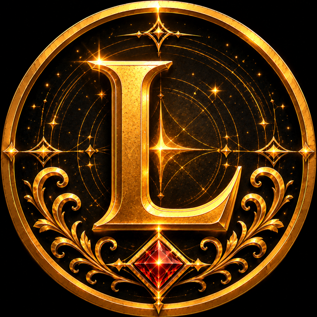
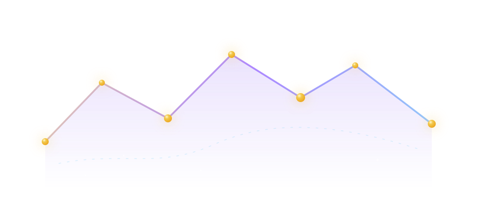

01
Easy for membersButtons and guided forms replace commands people must remember.

Lumina guild · Tibia · Secura
An international Tibia guild built around teamwork, progression and community.
Buttons and guided forms replace commands people must remember.
A Discord account, game characters and guild roles stay connected.
Live panels refresh automatically and important history remains readable.
Try one useful feature before deciding whether Premium is necessary.
First time here?
Lumina is our Tibia guild on Secura. Luminox is the Discord bot we built to organize it—and the product other guilds can install.
In simple terms: Luminox turns recurring guild work into guided Discord panels, automatic lists and clear logs.
Add Luminox to Discord and run the safe setup wizard.
Publish only the panels your guild will actually use.
Members use buttons while Luminox keeps panels and records updated.
How Luminox works
After a member verifies a character, Luminox can connect the correct Discord account, nickname, guild role and main character. Events, GuildBank, Loyalty and live lists can then use the same verified profile instead of asking for the same details again.
Product overview
Start with one problem. Every module has a setup guide, a member-friendly panel and clear staff permissions.
Verify characters through Tibia.com, choose a main, restrict the configured world and synchronize nicknames and guild ranks.
Guide party splits, accumulate small deposits, review transactions and award Loyalty through accountable economic activity.
Create hunts, bosses, quests and events with signups, availability voting, attendance validation and archived Discord threads.
Track online members, enemies, blacklisted guild power, renames, trades, transfers, returns and important alerts.
Transform online information already collected by Luminox into balanced match suggestions and a voluntary Looking for team board.
Route members to the correct private ticket thread, show who is responsible and keep completed conversations archived in Discord.

Designed inside Lumina
Luminox began as Lumina's private Discord bot. Registration, hunts, staff decisions, GuildBank reviews, support and enemy tracking are tested in daily guild use before they become features for other communities.
Meet the guild behind Luminox →Free or Premium
Free is the practical starting point for smaller communities and first-time evaluation. Premium adds more features, higher limits, longer history and faster supported updates.
Not sure where to begin?
The use-case guide connects common guild problems to the smallest group of Luminox features that can solve them.
Choose a use caseExplore
See the problems Luminox solves and how its systems connect.
02 · Use casesStart with your problemFind the smallest group of features that solves it.
03 · DocumentationLearn how it worksFollow complete member, staff and administrator guides.
04 · TrustReview safety boundariesUnderstand permissions, automatic cleanup, identity and archived Discord history.
05 · PlansCompare Free and PremiumChoose the service level and edition that match your guild.
06 · ContactTalk with usAsk about setup, access, development or the Lumina community.
Ready to organize your Discord?
The safe installation wizard detects existing configuration instead of destroying it, so you can introduce Luminox one useful module at a time.